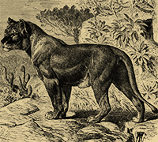
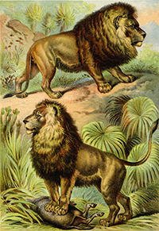

The present range of the lion includes most of Sub-Saharan Africa, from South Africa to Senegal, although in many of the more civilised districts the animal is now greatly reduced in numbers, or even completely exterminated. In Asia it is only in the western districts of India, being, however, now on the verge of extinction. Formerly, even within historic times, the lion had a much more extensive geographical range, extending westwards into Syria and Arabia, and ranging over a considerable portion of South-Eastern Europe, such as Roumania and Greece. This, however, by no means limits the original extent of its range, for bones and teeth found in the caverns and superficial deposits of Western Europe prove that lions, which appear specifically undistinguishable from the existing form, once roamed over Germany, France, Italy, Spain, and the British Isles. The ancient prehistoric lions of Western Europe were in all probability exterminated by the cold of the glacial period; but the destruction of those infesting Eastern Europe and parts of Western Asia during the historic epoch was probably effected, at least to a considerable extent, by human agency.
Although it is quite probable that its range may once have embraced the countries of Afghanistan and Baluchistan, the lion is now quite unknown in Asia to the northward of India. For a long period it was considered that the Indian lion differed from its African relative by the total absence of the mane in the male, which was hence regarded as indicating a distinct species. Moreover, owing to the differences in the length and colour of the manes of African lions from different districts, it was likewise held that there were two or more species in Africa. It, however, has been definitely settled that such variations are not constant, and that there is but a single species. Although it may be that some adult specimens of the Indian lion are maneless, yet well-maned examples have been killed, while those which were stated to prove the existence of a maneless race are now known to have been immature individuals. In spite, however, of the impossibility of specifically distinguishing between lions of different coloration, or between those inhabiting different regions of the country, it seems quite probable that the lions of one district may differ to a certain extent in some respects from those of another. Thus it seems pretty well ascertained that the lions from the Cape and Algeria have, collectively, larger and finer manes than those from other districts.

Lions are members of the panther family (genus Panthera). Close relatives of the lion include other big cats: the tiger, the leopard, and the jaguar. Panthera leo evolved in Africa roughly one million years ago. Fossil evidence indicates lions were present in Europe at one point, but died out at the end of the last glaciation, about 10,000 years ago.
There are eight subspecies that are commonly accepted:
The material located at this site is not endorsed, sponsored or provided by or on behalf of North Carolina State University. All photographs belong to Siyabona Africa (Pty) Ltd, courtesy of Kruger National Park. Information presented on this site was gathered from Africa Mammals Guide (courtesy of Kruger National Park), The Royal Natural History 1849-1915 (Lydekker), and Wikipedia's entry on the lion.